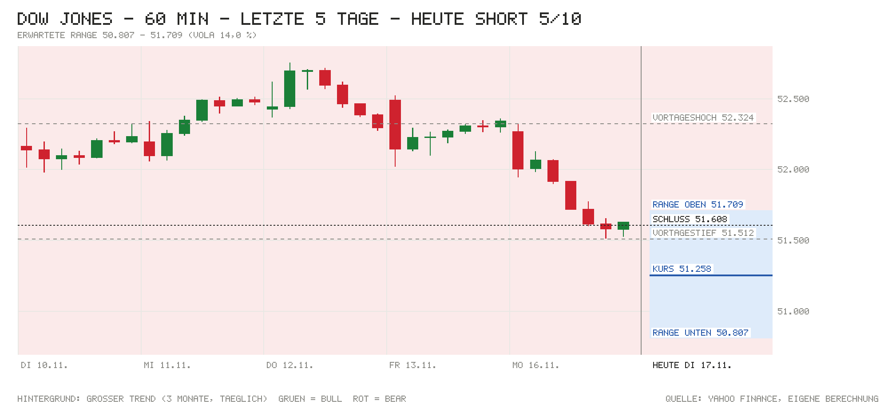

Tagesentscheidung ab 15:32 bis 22:00 Uhr
Für Short sprechen die breite Schwäche nach der Eröffnung (alle 30 Werte zusammen −338 Pkt., davon UnitedHealth allein −116), heiße Importpreise (+1,1 % statt +0,7 %) und eine schwache Industrieproduktion (−0,4 % statt 0,0 %), steigende Renditen (10J 5,15 %) und der große Trend, der auf Bear steht. Dazu kommen Verluste in Europa und Asien um gut 1 %. Das wichtigste Gegenargument sind die soliden Einzelhandelsumsätze (Kontrollgruppe +0,6 % statt +0,4 %) und die Nähe zur unteren Range: Der Dow liegt schon 0,67 % im Minus.
- Kurs um 15:32
- 51.258
- Erwartete Range
- 50.807 – 51.709
- Eingepreist (Tagesoption)
- ±0,88 %
Einschätzung vom Kurs um 15:32 bis zum US-Schluss. Range = ±1 σ für die restliche Handelszeit aus der S&P-500-Tagesoption, auf den Dow umgerechnet (ca. 68 %). Keine Anlageberatung.
Chart

Signale
| Signal | Wirkung | Stand und Einordnung |
|---|---|---|
| Eröffnung & erste Minuten | Gegenwind | Eröffnung 51.387 (Lücke −0,43 %), jetzt 51.258 (−0,25 % seit Eröffnung), Hoch/Tief bisher 51.387/51.184. Das Tageshoch ist die Eröffnung, seitdem geht es abwärts. |
| Schwergewichte heute | Gegenwind | Alle 30 Werte zusammen −338 Pkt. UnitedHealth −116, Salesforce −49, Home Depot −40; nur Caterpillar (+45) hält dagegen. |
| US-Daten heute | Gegenwind | Einzelhandel +0,2 % vs. Prognose +0,1 %, Kontrollgruppe +0,6 % vs. +0,4 % (gut). Aber Importpreise +1,1 % vs. +0,7 % und Industrieproduktion −0,4 % vs. 0,0 %, Auslastung 76,4 % vs. 76,8 %. Unterm Strich: mehr Inflationsdruck bei schwacher Industrie. |
| Europa & Asien | Gegenwind | DAX −1,27 %, Euro Stoxx 50 −1,28 %. Über Nacht Nikkei −1,34 %, Hang Seng −1,03 %, Shanghai −0,50 %. Weltweiter Risikoabbau trotz besserer ZEW-Werte. |
| Zinserwartung | Gegenwind | Fed am 9.12.: 107 % für +25 Bp. (impl. 4,15 %), Januar weitere 73 %. Die Erhöhung ist voll eingepreist, die Importpreise stützen das. |
| Renditen | Gegenwind | US 2J 4,85 % (+2 Bp.), 10J 5,15 % (+3 Bp.; vor einer Woche 4,88 %). Über 5 % bleibt Druck auf die Bewertungen. |
| Kreditstress | Neutral | FRED n/v. Ersatz: HYG −0,02 %, LQD −0,12 %. Kein Stress. |
| Öl & Dollar | Gegenwind | WTI 87,19 USD (+1,71 %), Brent 93,80 USD (+1,47 %), EUR/USD 1,0995 (−0,27 %). Teureres Öl und fester Dollar. |
| Trend | Rückenwind | 51.258 unter dem 21-Tage- (52.239) und 50-Tage-Schnitt (51.938), über dem 200-Tage-Schnitt (50.771). Der große Trend steht seit 28.10. auf Bear und passt zu Short. |
| Positionierung | Neutral | COT 10.11.: Hebelfonds im S&P-Future netto −303.060 Kontrakte, aber +69.258 in der Woche (Short abgebaut). Kein klares Signal. |
| Unternehmensnachrichten | Gegenwind | Home Depot engt den Ausblick ein, Kunden kaufen seltener; Disney schlägt die Prognosen. Nvidia legt nach Schluss Zahlen vor, das hält Käufer zurück. |
| Profi-Sicht | Gegenwind | ING: Der Dollar bleibt als sicherer Hafen fest, Nvidia ist der Test für den KI-Handel. |
| Termine im Fenster | Neutral | Fed Waller (15:10), NAHB-Hausbauindex (16:00), Fed Williams (20:25). Kein Zinsentscheid; Nvidia erst nach Schluss. |
Dow-Werte heute
| Aktie | Heute | Beitrag |
|---|---|---|
| UnitedHealth | −4,62 % | −116 Pkt. |
| Salesforce | −3,73 % | −49 Pkt. |
| Caterpillar | +1,30 % | +45 Pkt. |
| Home Depot | −1,87 % | −40 Pkt. |
| Microsoft | −0,88 % | −28 Pkt. |
| IBM | −1,72 % | −25 Pkt. |
| JPMorgan | −1,20 % | −25 Pkt. |
| Johnson & Johnson | −1,34 % | −23 Pkt. |
| Summe aller 30 Werte | −338 Pkt. |
Beitrag = Kursänderung seit gestern ÷ Dow-Divisor (aus den Kursen berechnet, 0,16367). Laufende Kurse von Yahoo, bis zu 15 Minuten verzögert. Die Dow-Liste im Skript hat den Stand Nov. 2024.
Großer Trend (3-Monats-Momentum)
- Stand
- Bear
- Seit
- 28.10. (5 Wechsel in 3 Monaten)
- Schluss 16.11.
- −3,25 % vs. Zins +0,99 %
- Heute dreht es bei Schluss über
- 53.993 (jetzt −5,04 %)
Auch mit dem Kurs von jetzt bliebe das Signal Bear, der Abstand ist groß. Bull = Rendite der letzten 3 Monate über dem Geldmarktzins, Bear = darunter. Regel: Rendite der letzten 63 Handelstage (≈ 3 Monate) gegen die 13-Wochen-T-Bill (^IRX, jetzt 4,15 %), jeden Tag zum Schluss neu entschieden, Zeitrahmen Tageskerzen (nach Antonacci 2014, dort monatlich über 12 Monate; täglich entschieden dreht es öfter falsch). Keine Anlageberatung.
Bilanz der letzten Entscheidung
16.11.: Short mit 3/10 ab 52.262. Die Richtung war richtig: Schluss 51.608, +654 Punkte in Richtung der Einschätzung (Hoch 52.324, Tief 51.512). Die Range von ±385 wurde nach unten überschritten. Gesamt seit Start: 8 Einschätzungen, Richtung 50 % richtig, Summe −611 Punkte bis Schluss (Schnitt −76). Range bisher an 50 % der 8 Tage getroffen (Soll ca. 68 %).
Marktlage
| Markt | Stand | Veränderung |
|---|---|---|
| Dow Jones (Schluss 16.11.) | 51.608,17 | −1,41 % |
| Dow (Eröffnung heute) | 51.386,98 | −0,43 % |
| Dow (jetzt, Kurs zur Notiz 15:32) | 51.258 | −0,68 % |
| S&P 500 | 7.400,67 | −0,21 % |
| Nasdaq 100 | 27.211,60 | +0,05 % |
| US-Futures (S&P / Nasdaq) | 7.428,50 / 27.364,50 | −0,14 % / +0,29 % |
| DAX (aktuell) | 26.260,71 | −1,27 % |
| Euro Stoxx 50 (aktuell) | 6.267,38 | −1,28 % |
| EUR/USD | 1,0995 | −0,27 % |
| WTI (USD/Barrel) | 87,19 | +1,71 % |
| Brent (USD/Barrel) | 93,80 | +1,47 % |
| Gold (USD/Unze) | 3.864,20 | +0,29 % |
| VIX | 22,89 | −0,09 % |
| VXD (Schluss 16.11.) | 18,49 | +13,37 % |
Stände von 15:33 Uhr (Yahoo, bis 15 Min. verzögert). Der Schluss vom 16.11. ist gegen den 13.11. (52.347,55) gerechnet: −739 Punkte. Steigendes Öl, ein fallender Euro (starker Dollar) und steigende Volatilität sind rot markiert. Auffällig: Die Nasdaq hält sich heute besser als der Dow.
Anleihen & Zinsen
| Kennzahl | Stand | Veränderung |
|---|---|---|
| US-Treasury 2J (live) | 4,85 % | +2 Bp. (vs. 4,83 % offiziell 16.11.) |
| US-Treasury 10J (live) | 5,15 % | +3 Bp. (vs. 5,12 %) |
| Fed nächste Sitzung (9.12.) | 107 % für +25 Bp. (impl. 4,15 %) | Erhöhung voll eingepreist |
| Fed-Zielband | 3,75–4,00 % (EFFR 3,88 %) | zuletzt +25 Bp. am 17.9. |
| US-Hochzins (HYG, Ersatz) | 76,72 USD | −0,02 % heute |
| Investment Grade (LQD, Ersatz) | 102,68 USD | −0,12 % heute |
Die Risikoaufschläge von FRED lagen nicht vor, daher die Anleihe-ETFs HYG und LQD als Ersatz (nur Tagesveränderung, Wochenwert n/v). US-Live-Kurve Stand 15:32 Uhr. Offizielle 10J vor einer Woche: 4,88 %, also +27 Bp. in einer Woche.
Termine heute (deutsche Zeit)
- vorbörslich Quartalszahlen Home Depot (bereinigt 3,86 USD je Aktie vs. Prognose 3,86 USD) und Disney (1,77 USD vs. 1,67 USD)
- 14:30 USA: Einzelhandelsumsatz – Ist +0,2 % vs. Prognose +0,1 % · Kontrollgruppe Ist +0,6 % vs. +0,4 %
- 14:30 USA: Importpreise – Ist +1,1 % vs. Prognose +0,7 % · Exportpreise Ist +1,1 % vs. +0,3 %
- 15:10 Rede Fed Waller
- 15:15 USA: Industrieproduktion – Ist −0,4 % vs. Prognose 0,0 % · Kapazitätsauslastung Ist 76,4 % vs. 76,8 %
- 15:30 Eröffnung der Wall Street
- 16:00 USA: NAHB-Hausbauindex – Prognose 29 · zuvor 29; Lagerbestände – Prognose +0,5 %
- 17:30 Atlanta Fed GDPNow – zuvor 3,5 %
- 20:25 Rede Fed Williams (New York)
- 22:00 US-Börsenschluss; danach Quartalszahlen Nvidia (EPS-Prognose 2,49 USD). Am 19.11. vorbörslich Walmart (0,64 USD).
Nachrichten zu Dow-Werten
- UnitedHealth: −4,62 % (−116 Pkt.), der größte Bremser. Eine Meldung von heute fand sich nicht. Einschätzung (ohne Quelle): Die Sorgen um die Margen bei Medicare Advantage tauchen immer wieder auf. Ohne klaren Auslöser kann der Abgabedruck weiterlaufen.
- Home Depot: Im 3. Quartal stieg der Umsatz um 4,9 % auf 43,4 Mrd. USD, flächenbereinigt um 2,2 %. Bereinigt verdiente Home Depot 3,86 USD je Aktie und traf damit die Prognose. Der Ausblick für die Vergleichsumsätze wurde auf ca. +1,4 % eingeengt (zuvor 0 bis +2 %), die Zahl der Einkäufe sank um 0,5 %. Finanzchef Richard McPhail wird Chef. Die Aktie liegt bei −1,87 %. Einschätzung: negativ, der Kunde bleibt zurückhaltend.
- Disney: Bereinigt 1,77 USD je Aktie (Prognose ca. 1,68 USD), Umsatz +16 % auf 25,95 Mrd. USD, Dividende +33 % auf 2 USD, 9 Mrd. USD für Aktienrückkäufe. Die Aktie liegt bei +0,93 % (+7 Pkt.). Einschätzung: positiv, aber zu leicht im Index, um die Richtung zu ändern.
- Nvidia: legt heute nach Schluss Zahlen vor. Im Hintergrund stehen der Rücktritt von Jensen Huang als Chef und neue US-Beschränkungen beim Vermieten von Rechenleistung an China. Am Montag fiel die Nasdaq um rund 2,5 %. Einschätzung: Bis zu den Zahlen bleiben Käufer vorsichtig.
- Salesforce: −3,73 % (−49 Pkt.), eine Meldung von heute fand sich nicht. Einschätzung (ohne Quelle): Softwarewerte bleiben im Umfeld der KI-Unsicherheit unter Druck.
Profi-Sicht & Positionierung
- ING THINK: Das FX Daily „Dollar showing resilience to tech stock instability“ erwartet einen festen Dollar, weil Aktienverluste ihn als sicheren Hafen stützen. Weitere Schwäche bei Tech und KI würde die Fed-Erwartung aber Richtung Lockerung schieben, Nvidia gilt als Test. Rates Spark fragt: „Can AI confidence bring rates back up?“
- Positionierung (COT, Stand 10.11.): Hebelfonds im S&P-Future netto −303.060 Kontrakte (+69.258 in der Woche), Vermögensverwalter netto 914.130 (−14.454). Bei 10J-Treasuries Hebelfonds netto −2,30 Mio. (−39.017). Die Short-Position im Aktienfuture ist hoch, wurde aber zuletzt abgebaut.
Quellen
- Marktdaten (Skript
marktdaten.mjs): Yahoo Finance (Kurse, Dow-Werte, VXD, ^IRX), Nasdaq (Kalender, Quartalszahlen, Optionskette SPY), US-Live-Kurve, Bundesbank, U.S. Treasury, Fed-Pfad über Amber Terminal, CFTC, ING THINK - Home Depot: Third Quarter Fiscal 2026 Results; Updates Fiscal 2026 Guidance
- Yahoo Finance: Home Depot Taps CFO Richard McPhail As CEO
- Rolling Out: Disney beats on EPS at $1.77
- Blockonomi: Disney dividend goes to $2 after strong Q4
- CNBC: Nvidia stock slides as investors weigh Jensen Huang resignation
- BigGo Finance: New York Stocks Plunge on AI Chip Restrictions, Nvidia Leadership Vacuum
- ING THINK: FX Daily – Dollar showing resilience to tech stock instability
- ING THINK: Rates Spark – Can AI confidence bring rates back up?